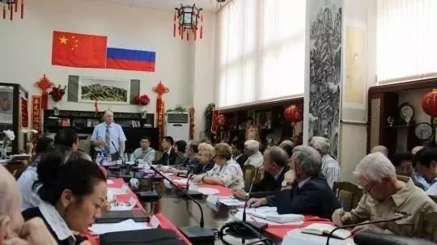

收录于合集
简
俞新天 ****，上海国际问题研究院研究员
摘 要
在中国崛起成为全球大国的同时，中国民间外交也进入了新时代。民间外交从人民外交而来，但已超越人民外交。民间外交与公共外交并存，但有异同。 特别应警惕对民间外交概念的“泛化”与“逆化”。 中国民间外交具有民间性、开放性、基础性、灵活性、独特的理论性等全新的内涵，同时也临着狭隘民族主义、民粹主义、极端主义、恐怖主义等外部挑战。 为了推动和完善中国民间外交，中国人应更深入了解和理解世界各国人民心理，拓宽交流对象，重点做国外中产阶级的工作，以及探索建立政府与民间互动的新模式和新机制。
关键词
新时代 中国民间外交 中国外交
经过改革开放以来近四十年的奋斗和积累，中国已迅速崛起成为全球大国，国际地位空前提高，国际作用显著增强。随着中国政府对外关系的全面发展，民间外交也水涨船高，进入了新时代。本文旨在厘清对民间外交概念的认识，探索民间外交的新特点和新内涵，总结民间外交所面临的主要外部挑战，并提出推动和完善中国民间外交的政策建议。
一、中国民间外交概念的澄清
对于民间外交的定义，本文认为：民间外交是由非官方的机构、组织和个人所从事的对外交往活动；其交往的对象主要是外国的非官方机构、组织和个人；其活动配合中国官方外交的发展，或符合中国官方外交的趋势，促进人民之间的友谊、理解与合作，为中国外交赢得国际民心民意的支持；通过参与全球治理促进世界的和平与发展。
要强调的是，民间对外交流尽管丰富多样，纷纭复杂，但不是所有的活动都可归入民间外交的范畴，要防止对民间外交定义的“泛化”和“逆化”。例如，绝大多数出国留学、跨国婚姻、出国旅游、跨国贸易经商等都是私人行为、商业行为，至多属于对外交流，不能随意定为民间外交。只有其中能够配合中国官方外交，或符合中国外交趋势的活动才可以归入民间外交的范畴。因此，所谓的“留学外交”等概念，是不准确的。把留学、婚姻、经商等纯属私人的行为冠以“外交”之名，既不符合事实，也会使国外产生误解。
中国民间外交源自新中国成立初期的“人民外交”、“国民外交”，在特定的历史条件下取得了辉煌的成绩，发挥了巨大的无可替代的作用。当然，由于各种主客观条件的限制，当时的“人民外交”也存在其局限性。今天，中国的民间外交已经超越了历史，站在了新起点之上。
中国民间外交进入新时代有如下三点原因：
一是中国已经成为全球大国。 习近平主席说，中国人是讲爱国主义的，同时我们也是具有国际视野和国际胸怀的。随着国力不断增强，中国将在力所能及的范围内，承担更多国际责任和义务，为人类和平发展作出更大贡献。显然，承担更多的国际责任和义务，作出更大的贡献，不仅是官方外交的任务，而且也必须呼唤广大民众的参与和投入。习近平还说，国之交在于民相亲，民相亲在于心相通。人民之间的心灵沟通和亲密友善，就是国家外交的基础。这就对民间外交提出了新的要求。
二是世界各国期待中国民间外交更上层楼，以便更好地理解中国人民的生活、思想、行为和梦想，准确地预测中国的未来。 许多人对中国仍有误解或不了解，国际上某些力量对中国进行“妖魔化”，加上中国人自身也未及时澄清和介绍自己，外界给中国贴上标签或者已经形成刻板印象，这些都是中国外交的无形障碍。仅靠中国政府或官方外交来消除误解是不够的，更重要的是依靠中国民间机构、组织和个人的国际交流沟通和言行举止，去直接影响外国社会和人民。
三是中国人民生活水平不断提高，精神面貌发生了前所未有的变化。 十九大报告指出，中国的贫困发生率已降到百分之四以下，教育事业全面发展，城乡居民收入增速超过经济增速，中等收入群体持续扩大。中国人民的素质和能力空前提高，投入民间外交的热情和意愿空前高涨，如旭日喷薄，江水奔流。
综上所述，中国民间外交已经站在了新的历史起点之上。民间外交与公共外交两个概念最能反映当前人民参与对外交流的状况。两者之间有相同之处：客观对象相同，要面向外国社会民众做交流沟通、争取人心的工作，从性质上也都负有配合官方外交的使命和任务。然而，两者又有一定的差异：从主体上看，公共外交既可由政府、官员来进行，也可委托中国民间或外国民间进行，而民间外交则完全由中国民间进行；从性质上看，公共外交的战略目的性更强，而民间外交则因其民间性和广泛性，出现自觉配合外交和自发符合外交等多种情况。两者在很多情况下可通用，也在特定环境下可分别使用。这两个概念成为研究热点，反映出中国成为大国、强国的需要，中国人民参与对外交往的广度深度空前，标志着新时代已经开启。
二、中国民间外交的新特点和新内涵
今天，中国民间外交不仅具有世界各国“公民外交”、“公共外交”、“多轨外交”的共同特性和表现形式，而且具有全新的时代特点和中国特色。中国民间外交的新特点不仅由许多客观存在的因素决定，而且也是由中国共产党的领导、中国政府与民间的互动而不断塑造的。
（一）民间性：社会与个人的迅速成长和空前的参与热情
现代化进程促进了中国社会和个人的迅速发展，当代的民间性与计划经济体制下的民间性已经大不相同，除了政府、官员之外，还包括广大的具有相当自主性的民间机构、组织和个人。中国人民配合支持官方外交的积极性始终存在，然而今天的民间外交已经具有与历史完全不同的基础、规模和作用。中国人的素质和要求已经发生了翻天覆地的变化，为民间外交提供了全新的基础。改革开放近40年来，中国的经济总量已升至全球第二，人均GDP水平也从世界最不发达国家提升到发展中国家的中等收入水平。九年义务教育惠及40岁以下人群，在城市中大学教育已经普遍化。中产阶级迅速成长，据估计有2亿~3亿人口。消除绝对贫困和城市化的政策还在促进新的中产阶级的扩大。投入民间外交不仅是中产阶级工作和生活的需要，也是满足其精神需求、贡献社会、实现自我价值的渴求。
中国的企业（包括国营企业和民营企业）、社会组织和公民的国内外活动如火如荼，为民间外交提供了不竭的动力。新中国成立之初，民间组织的数量屈指可数，而且在很大程度上与政府有着特殊的联系。改革开放以来，国营企业和民营企业如雨后春笋般诞生和发展，在市场经济中独立搏击，近年来更大批走向国外，开展合作、并购，开拓海外市场，为“中国制造”向“中国创造”树立了世界形象。根据民政部2017年8月3日发布的《2016年社会服务发展统计公报》，截至2016年底，全国共有社会组织70.2万个，比上年增长6.0%。中国的非政府组织在国际活动中十分积极，并在其中发挥了越来越大的作用。中国的智库在各领域对话中都十分活跃，极大地促进了中国与世界各国的相互了解和理解。中国公民个人的独立性和自立性增强，许多青年成为国际志愿者，到贫困的国家和地区送医送药，帮助开展教育，不仅推介了中国的形象，而且提升了自己的国际视野。
（二）开放性：中国全方位开放与人民的开放态度
民间性本身也意味着广泛性，它包括中国广大的多样性的地域，包括各行各业各领域，包括男女老少不同人群，包括不同民族不同宗教的成员。中国幅员辽阔，人口庞大，其广泛性是客观存在的。然而客观存在的因素并不必然转化为民间外交的行为，还需要一定的条件。例如许多客观因素在中国一直存在，然而在改革开放前后其效果却截然不同。改革开放前中国相对封闭，民间外交十分有限。邓小平打开了开放的闸门，把对外开放定为中国的基本国策。中国实行了全方位的开放，从沿海到内地，从经济到文化，从参与地区合作到支持全球治理，从国际体系外的“造反者”变成国际体系内的参与者和建设者，这才为民间外交带来了无限的可能性。
民间外交的主体是人民，而人民对于世界局势和对外交往的态度是至关重要的。近40年来，中国人民站在改革开放的前沿，对于开放的意义和中国融入世界必要性的认识空前提高。对外开放锻炼了中国人，中国人也从对外开放和国际合作中获得了实际收益。对外开放的道路并非一马平川，然而无论是亚洲金融危机、全球金融危机，还是中国从高速经济增长到今天中速发展的“新常态”，中国人对于开放的肯定态度未曾改变，而且更加积极。中国人明白开放也是双刃剑，也会带来许多副作用，但是不开放的危险性和危害性更大。中国人吸取了历史教训：封闭导致落后，落后就要挨打。中国现代化的发展大大改善了人民的生活，中国人把这些成就归功于改革开放，因此他们持有拥抱全球化的立场，支持中国更深地融入国际体系，承担大国、强国的责任与义务。在近年来“反全球化”浪潮高涨的国际氛围下，中国人的开放立场极大地支撑了中国外交，并且使民间外交的热情兴盛不衰，十分难能可贵。
（三）基础性：民心永远是外交的基础
有学者认为民间外交具有“稳定性”的特点，因为政府可能更迭改变，但民心民意比较“稳定”。本文认为，“稳定性”一词应改为“基础性”更准确，因为外国的民心民意也决非一成不变，但它始终是官方外交的基础。在国际局势变化、热点问题频生的今天，民意的变化更加迅速，新媒体的普及也加速了民意的变化。例如，据美国《芝加哥论坛报》报道，特朗普上台以来，全球公众对美国总统的信任度急剧下降。美国皮尤研究中心对37国民众进行的调查显示，只有22%的人对特朗普有信心，49%的人对美国抱有好感。据全球民调机构益普索对25国民众进行的调查显示，只有40%的受访者对美国持正面看法，比去年下降了24%。对中国持正面看法的受访者为49%，比去年下降6%。当然，民调不能完全反映民心民意，但可以作为参考。无论民意是变好还是变差，它永远是外交和国际关系的基础。正因为欧盟民众对美国的评价恶化，黙克尔才能明确讲出，欧盟不能在安全上完全依赖美国。由于国际民意对中国的正面看法在增加，中国推进“一带一路”建设才更有底气。
（四）灵活性：方法多样，深入人心
民间外交可以充分发挥民间机构、组织和个人的优势，采用灵活多样的方法，开展中外交流沟通合作，与官方外交形成互补。民间外交札根基层，潜移默化，润物无声，直击人心，为中国赢得国际民众的支持。总部设在上海的民营企业中国华信，十多年来积极开拓在捷克的业务。
印度文豪泰戈尔曾访问上海，如今不仅他的雕像树立在上海街心花园，而且他创办的香蒂尼克坦国际学校与上海晋元中学正式签订了校际交流友好备忘录。2009年两校开通了视频教学课程，其中包括瑜珈、太极和书法等传统文化课程，为培育两国人民友谊代代相传探索了道路。
 （俄中友好协会举办中俄友好“民间外交座谈会”）
**
**
（五）独特的理论性：以中国特色社会主义理论体系为指导
许多学者认为，中国民间外交的理论研究仍然不足。本文十分同意，深化理论研究确为当务之急。但是，与世界各国的公共外交和民间外交相比，中国的民间外交具有鲜明的理论性，即以中国特色社会主义理论体系为指导。西方发达国家的公共外交和民间外交受到现实主义、自由主义和建构主义理论的影响，民间组织和个人往往秉持民主、自由、人权等价值观投身于此。十九大报告对于中国外交提出了“坚持和平发展道路，推动构建人类命运共同体”的要求。十九大报告指出，“各国人民同心协力，构建人类命运共同体，建设持久和平、普遍安全、共同繁荣、开放包容、清洁美丽的世界”。这就为中国公共外交和民间外交指明了奋斗的方向。十九大报告还指出“要相互尊重，平等协商，坚决摒弃冷战思维和强权政治”，“维护国际公平正义，反对把自己的意志强加于人，反对干涉别国内政，反对以强凌弱”。这就要求中国人民在国际交往时，尊重别人，平等待人，对话协商，以便共同维护国际公平正义。除此之外，十九大报告提出的“要尊重世界文明多样性，以文明交流超越文明隔阂、文明互鉴超越文明冲突、文明共存超越文明优越”。这可以被视作是民间外交的文化价值观理论，这就要求中国人民学习和吸收世界一切文化的优秀价值观，也贡献中华文化的优秀价值观，形成人类命运共同体的共享价值观。
三、中国民间外交面临的外部挑战
当今时代的主题仍然是和平与发展。中国将抓住机遇，在未来全面建成小康社会，与此同时对外交流与合作也会更上层楼，民间外交必定乘势而上，开创更辉煌的局面。但是，也必须清醒地分析和预见不利条件，正视未来可能面临的主要挑战。
（一）“中国威胁论”及狭隘民族主义
改革开放以来，中国崛起的速度越快，实力越增强，国际影响力越大，“中国威胁论”的声音就越响。“中国威胁论”首先在美国诞生。根据西方列强在国际体系中竞争的规律，新兴大国必然挑战既定大国，最后以武力达到权力更替的结果。由此形成的现实主义理论广为传播，不仅在西方国家根深蒂固，而且对于发展中国家的精英和民众有着巨大的影响。在2008年全球金融危机爆发后，美国、欧洲和日本的经济受到重创，与中国和新兴国家的增长相比，西方国家的力量相对下降，于是“中国威胁论”更加甚嚣尘上。特朗普上台后，大讲“美国优先”，助长了狭隘民族主义的声势。
（二）“中国危害论”与新民粹主义
民粹主义是现代社会中始终存在的一股思潮。它认为统治阶级具有颓废腐朽没落的特性，因而必然会被人民的崛起而取代。与真正推动社会和历史前进的人民运动不同，民粹主义是假借“人民”的名义进行的反对历史前进的思想和运动。它具有以下特点：
首先，在全球化的中心反全球化。美国和欧洲是全球化的领导者和推动者，30多年来全球化狂飙突进，与此同时问题也堆积如山。全球化和自由化加速了各国内部和各国之间的经济和社会差距。近20年来，新兴国家富裕阶层收入的中间值在渐进式增长，而发达国家中产阶层的收入平均值却未增长。发达国家的政府本应加大投入改变现状，但是美欧多国债台高筑，财政捉襟见肘，使人民灰心失望。
其次，空前的反建制与反精英情绪弥漫。新民粹主义反对“进步主义”，即知识精英和政治精英联手为人民指方向找出路，认为不如依靠自己。这与现代化的科层制（官僚制）和理性主义背道而驰。由于新媒体的广泛应用，草根精英和网络领袖的号召力大增，传统精英的影响力相对下降，更使民粹主义如虎添翼。民粹主义尽管能煽动广大民众情绪，却不能为国家和人民带来真正的进步和良好的结果。例如美国金融危机后组成的茶党，对“占领华尔街”起了很大作用，但是并没有解决美国债台高筑、虚拟金融高涨的危机。“西亚北非动荡”的发起国家突尼斯至今陷于内部混乱之中，人民的生活未能得到改善。
最后，左翼和右翼民粹主义合流。左翼民粹主义历来以工人、农民、少数族裔等底层民众的代表自居，主张平等、公正和人权。右翼民粹主义持有保守的保护主义和强烈的民族主义倾向，经济政策上突出反对移民，维护国内就业，鼓励产业和资本回流等。但两者目前在反全球化、实行保护主义方面却左右合流，声势因此也更加浩大。
中国在全球化中受益多，又在推动改革开放与全球化，因而成为世界各国民粹主义的众矢之的。左翼民粹指责中国“破坏环境”、“输出社会不公”、“破坏劳工待遇和人权”；右翼民粹则在主权安全问题上发难。在亚洲、非洲和拉丁美洲，许多中国企业精心经营，不但为促进中外经贸关系做出贡献，而且更加重视企业的社会责任，严格遵守所在国的环保、劳工法规，加快员工和管理人员的本地化步伐，培养了当地人才，改善了人民生活。然而，在各国都有一些非政府组织和“民间力量”，以有色眼镜盯着中国企业，指责本国劳工的待遇不如中国员工，“破坏环境”，没有尊重当地文化，甚至以“主权”“安全”为由阻挠能为本国人民造福的重大工程。在它们背后，经常能看到西方势力的插手。各国的反华反动势力往往把中国作为“替罪羊”，以此转移国内民众的不满和指责，而民众容易轻信误判。
（三）认同危机与极端主义、恐怖主义
目前世界各国认同危机突现，成为紧迫而严峻的课题。认同是从个人身份开始，进而达到群体的归属，包括文化认同、民族认同、政治认同和国家认同等丰富内涵。认同涉及价值观的赞同，但比文化和价值观更加广泛深刻。英国与欧盟各国、美国的白人和少数族裔，在价值观上并无太大差异，然而却因认同分歧产生矛盾冲突，甚至分道扬镳。大多数发展中国家民族众多，宗教多样，它们经漫长的历史形成，具有持久性。但在现代国际体系中，民族国家（nation state）成为基本单位，因此各国政府都将领土内存在的各个民族集团(ethnic group) 整合成国家民族(state- nation)，例如印度大力构建“印度民族”。国家民族这一现代化的产物，与具有历史文化传统的民族集团之间，存在着张力，既表现在政治、法律方面，也表现在文化、宗教和心理方面。今天所有国家都在国际体系中相互联系和相互依存。于是又出现了第二对矛盾与张力，即国内问题与外国影响（包括政治、经济、军事安全和文化等）之间的紧张。其中占世界主导地位的西方文化的影响尤其巨大，跨境民族、跨国宗教也有不可忽视的作用。所有的国家政府都面临着认同问题的挑战，努力通过各种措施促进国内的认同与融合。
四、推动 和完善中国民间外交的思考
中国民间外交已经取得了相当的成绩和经验，但相对于时代的要求、国家的发展和各国的期待，仍然有巨大的成长空间。中国的民间机构、组织和个人走出国门时日较短，对世界各国的了解和理解仍然不够，参与全球治理的机制和活动刚刚开始，不仅应当在加强实践和国际合作中学习提高，也必须客观认识自身的弱点与不足，克服内部存在的困难和问题。
（一）深入了解世界，提升大国国民风范
世界上众多的民族、宗教、文化丰富多彩，千姿百态，要了解和理解十分不易。俗话说，眼见为实。现在大量中国人走向海外，确实眼见外国情况，但是离深入了解与理解还有很大距离，甚至还可能存在严重的误解。例如，人们一般认为发展中国家贫穷落后，实际上它们在发展程度上大相径庭，有的在人均收入上远超中国。中国自1975年起连续派遣医疗队到摩洛哥，2013年派出的第13批医生全部来自上海。医生们发现摩洛哥属于中等发展中国家，除本国医疗人员外，还有大量国外政府和非政府组织提供的医疗援助，并不属于“缺医少药”的最不发达状态。问题在于医疗资源集中于城市等条件较好的地区。于是中国医疗队便主动去条件艰苦的地方，为贫困人群服务，受到了热烈的欢迎和赞扬。但是，摩洛哥人不承认接受医疗“援助”，只肯讲“合作”关系。上海医疗队尊重当地人的心理，多赞扬摩洛哥的成绩，使双方的友谊愈加深厚。医疗合作为2016年建立中摩战略伙伴关系作出了贡献。人们只能通过自己的文化去认识其他文化、宗教和行为，在某种程度上，误解不可避免，或曰误解是走向理解的桥梁，问题是要意识到自己存在误解，并准备克服它，走向真正的理解，特别要强调去理解别国人民的心理。
中华文化博大精深，数千年一脉相承，对于邻国乃至世界有重大的影响，因此有些中国人自高自大，唯我独尊。应当看到，邻国受到中华文化的滋养，但在很多方面发挥了自己的创造性，也取得了辉煌的成绩。例如韩国的“端午祭”申请到世界文化遗产，有些中国人不问青红皂白加以反对，其实它与中国的端午节不同。前韩国驻华大使金夏中曾写道，“自诩博大”是中国人普遍的心理写照，认为中国是世界文化的中心，中国文化优于其他文化。旁观者清，他的批评有一定道理。有些中国人看待事物的立场源于中国文化中心论，尽管它不同于西方殖民主义的文化中心论，但也同样是错误的。它不仅损害民间外交的平等交流，而且也阻碍中国的创新与前进。
各国之间除了文化本源的差异以外，还有历时性差异，即是否具有现代化所带来的工业文明、城市化以及大众流行文化等。中国在过去近40年来现代化取得了巨大进展，人们的衣食住行和文化娱乐，与以往迥异。有些中国人具有暴发户心态，轻视现代化后进的国家，而对西方发达国家盲目崇拜追随。应当看到，新兴国家如金砖国家，发展中国家如越南、老挝、柬埔寨、孟加拉国，甚至非洲许多国家都在现代化道路上快速奔跑，前景光明。而且各国有自己的特殊优势和禀赋，已经或未来有可能在某些方面超过中国，中国人应当充分赞扬和肯定别国的进步，并且虚心学习，互相促进。
民间外交面临参与全球治理的新任务。中国民间机构、组织和个人必须树立全球视野，学习借鉴国际非政府组织参与全球治理的经验，配合中国官方外交，积极投入各项活动。其实，中国的非政府组织已经积极走向世界，并在各个专业领域内取得越来越多的成绩，赢得了更好的口碑。问题在于，在参与全球治理时，民间机构、组织和个人不仅要发挥和依托本身的优势和专长，而且要扩大眼界，加入到世界推进重大项目的事业中去。例如，上海国际问题研究院作为知名智库，已经在北极研究方面颇有建树。为了参与全球治理的进程，上海国际问题研究院又配合中国政府，制订参与北极治理的政策，参加国际上官方与民间关于北极治理的对话讨论，作出了贡献。又如，自2002年起，上海先后派遣了8批共87名青年志愿者参加援助老挝计划。这些青年在英语教学、体育、电脑、医疗卫生、农业方面学有专长，然而要参与联合国倡导的扶贫援助计划，他们还必须了解老挝的状况和政策、联合国的原则和要求，以及提升自己的组织能力、交流沟通能力等。
（二）拓宽交流对象，广交深交新朋友
传统的人民外交、民间外交接受政府委托的任务，一般来说交流沟通的对象是精英，例如前政要、智库专家、大企业家、社会名流等。而政府开展的官方外交和公共外交，其主要对象仍是各国精英。处于新时代的民间外交则应大大拓宽交流的对象，以便与官方外交形成更大的互补。民间外交的主要对象是外国的民间机构、组织和个人，从理论认识上来说，今后交流沟通的主要对象是国外中产阶级。第二次世界大战后，在西方国家中，中产阶级占人口的半数以上，形成了两头小中间大的橄榄型社会，使得消费增长、经济发展、政治稳定。中产阶级包含以下三要素：一是中等收入，生活优裕；二是从事非体力劳动职业；三是受过良好的教育。在过去三十年中，发展中国家很多人脱贫，中产阶级的规模和增长速度十分惊人。著名专家霍米·哈拉斯在最近的研究报告中估计，占世界总人口的42%的32亿人，现在已跻身全球中产阶级。由于发达国家的人口不过十几亿人，因此发展中国家的中产阶级总数已超过发达国家中的中产阶级。中产阶级每年增加1.6亿人，再过几年世界多数人将成为中产阶级，这在历史上还是首次。当然，中产阶级的增长因地而异，亚洲将是主要的增长地区。哈拉斯预计，今后几年将有10亿人跻身中产阶级，其中88%在亚洲。[14] 中产阶级虽然被称为阶级，但与传统的阶级概念不同，它包含了广泛的社会阶层，很多阶层因与高科技和新产业联系而代表社会发展的方向，有些阶层因从事媒体、教育、医疗、法律、文艺、管理等职业，而对社会民意具有较大的影响。
中国人在开展民间外交时，应当更好地认识中产阶级的要求和中产阶级社会的特点。中产阶级既是社会政治稳定的基石，也可能因对现状不满、期望落空而成为动荡甚至暴力的根源。美欧发达国家的中产阶级连年收入停滞，不满愤怒，发展中国家的中产阶级也因期待过高而走向失望，容易产生前文所述的狭隘民族主义和民粹主义。中国民间外交进入新时代，以中产阶级作为主要交流对象是一大标志。然而，由于全球金融危机的负面影响未消，全球经济增长乏力，中产阶级处于巨变之中，失望挫败情绪增长，中国民间外交也会面对更加复杂的局面。在这方面中国人的思想认识和准备仍然不足。
中产阶级阶层很多，人口巨大，工作从何入手，才能事半功倍？答案是从草根精英入手。在中产阶级社会中，一个显著的特点是传统精英的地位相对下降，草根精英的地位相对上升。这不仅因为社会进步和民主制度鼓励民众更多地参与各项活动，而且因为中产阶级具有更强的自我组织和自我治理的意识和能力，于是产生了大量的新精英或草根精英。新媒体的应用也催生和扩展了草根精英。新精英或草根精英主要包括网络领袖、社区领导、非政府组织创始人、中小学教师、中小企业主、律师、演艺界人士等。他们直接联系民众，拥有成千上万的粉丝，具有强大的号召力和影响力。中国人在开展民间外交时应当广交深交草根精英这样的新朋友，同时这些新精英多半也都是中青年，而争取中青年的人心也是获得未来的保证。传统精英仍然有其重要意义，也需要不断工作，达到可持续发展，但这可由官方外交和公共外交主要来承担。民间外交如果能做好草根精英的工作，进而辐射广大中产阶级，不仅对于官方外交是极好的配合与互补，而且能为中国软实力的升级做出贡献。
（三）政府与民间建立互动新模式
民间外交具有两种基本形式，一种是自觉配合中国官方外交，即由各级政府发动民间机构、组织和个人，委托它们从事特定的对外交流沟通活动；另一种是民间机构、组织和个人自发的活动，符合中国官方外交发展的潮流和趋势，也被纳入民间外交。所谓民间外交进入新时代的标志，即两种形式都蓬勃发展，各显其能，充分展示中国人参与国际交流和全球治理的热情、才能和力量。然而，现在政府和民间对这一新情况的认识不足，缺乏准备，还未摸索出官方与民间互动的新模式。
政府具有领导、组织和引导的重要作用。政府委托民间机构、组织和个人从事特定的对外交流沟通的任务，由来已久，经验丰富。但是，面对今天空前广度和深度的争取国际民心的紧迫任务，以及国内民间机构、组织和个人井喷式地繁荣兴盛及参与意愿，各级政府经常显得手足无措，难以应付。例如民间外交的重镇上海有16个区，目前仅有3个区设有区对外友好协会。在空缺对外友协的区，民间外交工作与外交外事界限不分，甚至被取代或淹没。即使在已设对外友好协会的区，没有明确的编制，缺乏相应的资金，扶持政策和措施很少，对民间外交的组织和领导相当无力。
对于自发的民间外交如何组织和领导，是摆在各级政府面前的新课题。民营企业走出国门创业，人们跨国定居结婚，学生老师求学任教海外，他们肯定是文化交流的使者，但不一定负有民间外交的任务。然而，由于中国外交的积极拓展，例如“一带一路”倡议覆盖欧亚大陆各国，有的人也因此主动贡献，成为国与国交流的友好桥梁，这也符合中国外交的潮流和趋势。各级政府应当敏锐地发现他们，充分地肯定他们，并给予适当的精神鼓励和物质支持。这种形式过去少见，今后将层出不穷，各级政府如何对待这一新现象，还没有成熟的做法和机制。应当看到，中国外交是党领导下的伟大事业之一部分，凡能从事民间外交活动，符合中国外交潮流和趋势，拥护中国共产党领导下的国家强盛、人民友好、和平发展的华人华侨，都应获得尊重和肯定。
当民间外交发展到队伍庞大、领域众多、涉及各国之时，传统意义的完全整合、绝对步调一致是相当困难的，而且可能不利于新生事物发挥主动性和创造性，因此可以采用宏观引导和分管部门具体支持相结合的方式。中央政府将把公共外交和民间外交纳入大外交的视野，定期发布外交总结和趋势报告，让海内外中国人更加清楚中国外交的方向和趋势，以便更好地加以配合。可以成立各种基金会，奖励和鼓励公共外交和民间外交的优秀成果、组织和个人，为民间外交树立典范和榜样。分管部门可以根据自己的职责，联络和支持相应的民间外交机构、组织和个人。工商联和行业协会应当联络企业（包括国营和民营企业），支持企业走出去的活动。各级地方政府可以更多地关注本地区走出去的智库、学校师生、友城活动中的民间往来等。侨办应当关心在海外定居的华侨华人。中国使领馆最了解第一线情况，最有权威和优势整合在该国开展的民间外交活动。近年来中国举办的“中华文化之光”等活动，表彰在世界上传播中华文化的优秀人物和感人故事，产生了巨大影响。丰富多彩的民间外交正如火如荼地进行，值得表彰褒奖的领域不可胜数，亟待关注。可以预见，民间外交这样人民性、群众性的事业，难免出现鱼龙混杂、泥沙俱下的问题，但是瑕不掩瑜，依法处理问题，满腔热情地欢迎和讴歌人民参与民间外交的创举，并在实践过程中不断地完善它，才是正确的态度。
注：本文经国政学人编辑和删减。篇幅有限，参考文献请见原文。
文章来源：《国际问题研究》2017年第6期
编辑：汪乐乐 里仝